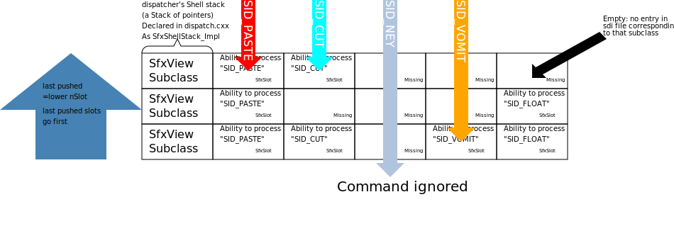

Signal processing in the sfx2 Interface.
State of 5.5.2013
related modules are: svidl (idl compiler), framework (command processing routines), rsc (resource compiler, see below), vcl (command processing routines)
Here is a chart how the "slot-model" of the command processing framework works.
Menu commands and Key accelerators are stored
asynchronously into a UNO command stack and later executed
seqentially.

Changing the system: In Order to add a function to a shell,
Add an entry to the .sdi file corresponding to that SfxShell
Example:
SID_PASTE [ ExecMethod = ExecDrawFunc; StateMethod = GetDrawFuncState; Export = FALSE; ]
The "state" method is the method called to checked whether that command is active now. The "exec" method is called when the command should be processed by the shell. Both functions obtain a SfxRequest Object as a parameter, declared in ./include/sfx2/request.hxx.
Each Application Window has ONE Dispatcher.
This registers all SfxShells (or rather their
subclasses) which can get commands from the user AT THE MOMENT.
These shells are created when the edit mode they
are part of is first used, but not discarded until the window closes.
./sfx2/source/control/dispatch.cxx:
void SfxDispatcher::Pop receives Pushes and Pops
of the shell to/from the stack.
The real Pushing/Popping, however, is done during
SfxDispatcher::FlushImpl
Main dispatching routine In
./sfx2/source/control/unoctitm.cxx
SfxDispatchController_Impl::dispatch.
SfxDispatchController::_FindServer
gets the SfxInterfaces of the shells. They are defined by macro calls
to SFX_IMPL_INTERFACE, defined in include/sfx2/shell.hxx .
Upon GetInterface, they yield their pInterface,
which, upon GetSlot, returns a SfxSlot of that Shell
For that command, which is then Executed with
Dispatcher::Execute.
If the program is set into another mode, for
example by clicking a hovering object in writer
after Text editing, all shells are removed from
the dispatcher and new shells are pushed
to match the current mode.
How to build menus
In order to introduce a menu command, the uno command must be linked to a slot name.
This is done in different sdi files, such as sfx2/sdi/sfx.sdi.
There, you define the slot:
Structure:
SfxVoidItem uno_name_the_part_after_colon SID_COMMAND_NAME
()
[
/* initialization of variables is coming here */
]
In ./include/sfx2/sfxsids.hrc, the defines of the slot names and their numbers are entered. The numbers are just needed because definitions cannot be enums, and for compatibility.
In ./officecfg/registry/data/org/openoffice/Office/UI,
there are .xcu ended xml files that define the single menu items.
They contain the US- language name and the .uno: command.
In ./include/sfx2/sfxcommands.h, the uno command names are listed.
The resource compiler, which creates files some GetState methods refer to, is in the ./rsc directory. It is a separate executable, invoked at compile time.